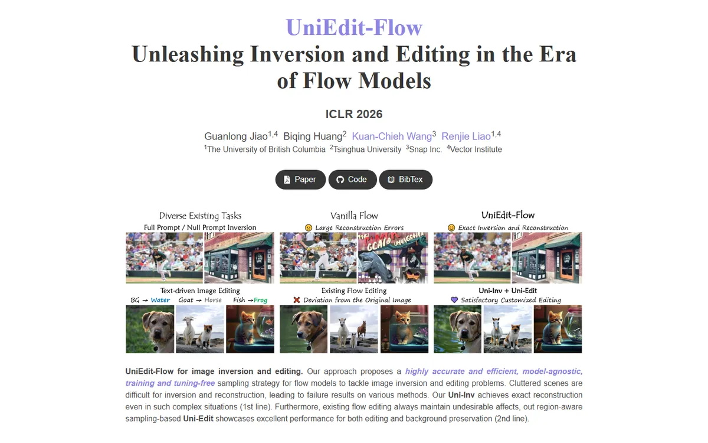

UniEdit-Flow: Unleashing Inversion and Editing in the Era of Flow Models
A lilac-inked lab report: a serif masthead, a row of tabs, and before-and-after sliders that do the explaining.

Checked against the rendered page. Lato, Noto Sans and Google Sans are never loaded. The serif title is an accidental Times New Roman fallback.
Why it is here
Purple accent system with a tabbed sub-navigation (Home / Compare / Gallery) and a well-captioned overview diagram. Source/Uni-Edit split-slider comparisons across three models present the results well. Serif headings give it some character.
Overview
Color Palette
Typography
Times New Roman
UniEdit-Flow: Unleashing Inversion and Editing in the Era of Flow Mode
Abstract · Method · Results · BibTeX — 0123456789
Arial
UniEdit-Flow: Unleashing Inversion and Editing in the Era of Flow Mode
Abstract · Method · Results · BibTeX — 0123456789
Source Sans Pro
UniEdit-Flow: Unleashing Inversion and Editing in the Era of Flow Mode
Abstract · Method · Results · BibTeX — 0123456789
Spacing & Shape
Page Modules
Guidelines
More like this

Scaling Text-Rich Image Understanding via Code-Guided Synthetic Multimodal Data Generation
A university press catalogue: small-caps serif title, a colour wheel of specimens and an earthy bar chart.

DICE-BENCH: Evaluating the Tool-Use Capabilities of Large Language Models in Multi-Round, Multi-Party Dialogues
A Nerfies page with a game-box cover: a charcoal dice banner stamps the identity, then pastel brand-tinted pills and a grey carousel strip carry you into a quiet two-column method read.

TUNA: Comprehensive Fine-grained Temporal Understanding Evaluation on Dense Dynamic Videos
A benchmark that leads with its scoreboard: a fish-logo small-caps wordmark, a gradient venue line, then a full-width grey-headed leaderboard with zebra rows and blue model links.

Archon: A Unified Multimodal Model for Holistic Digital Human Generation
A midnight observatory: an opalescent logotype, teal signal lights and numbered mission cards glowing on deep space.

Pano3DComposer: Feed-Forward Compositional 3D Scene Generation from Single Panoramic Image
A tidy lab notebook with blue margin tabs, opened on a split panorama you can drag apart.

UniPixie: Unified and Probabilistic 3D Physics Learning via Flow Matching
A product launch page for a physics engine: frosted pill nav, heavy sans headlines and a sky-to-red gradient running through every accent.